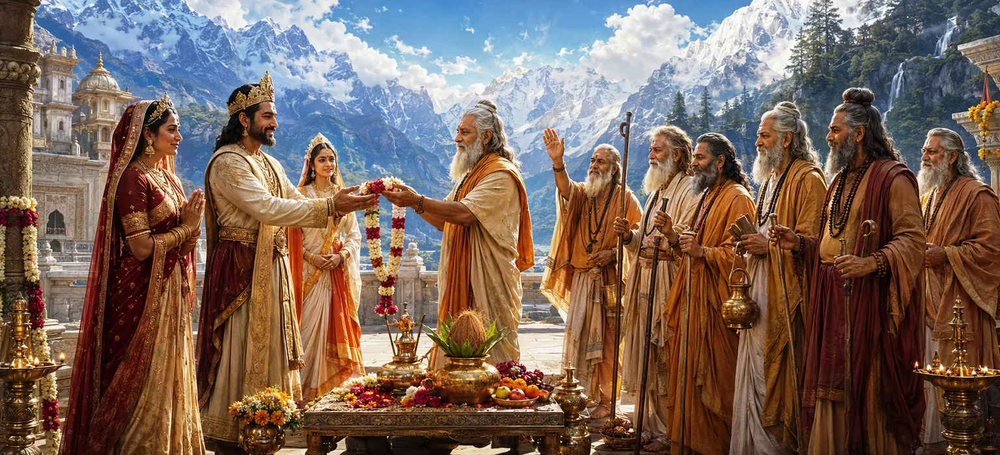

सात महान ऋषियों द्वारा लाए गए पवित्र संदेश को सुनने के बाद, राजा हिमालय उनकी यात्रा के पीछे के दिव्य उद्देश्य को समझ गए। देवी पार्वती का विवाह भगवान शिव से कराने के प्रस्ताव ने उनके हृदय को श्रद्धा और खुशी से भर दिया। नियति की पूर्ति और देवताओं के आशीर्वाद को पहचानते हुए, वह अपनी पूरी सहमति देने के लिए तैयार हो गया।
ऋषियों ने औपचारिक रूप से भगवान शिव को पार्वती से विवाह करने का इरादा बताया। उन्होंने इस मिलन के पवित्र महत्व को समझाया और बताया कि इससे पूरे ब्रह्मांड को कैसे लाभ होगा।
ऋषियों की बात सुनकर राजा हिमालय को अपार प्रसन्नता हुई। यह विचार कि भगवान शिव स्वयं उनके परिवार के सदस्य बनना चाहते थे, एक असाधारण आशीर्वाद की तरह लग रहा था।
राजा ने पार्वती द्वारा की गई वर्षों की तपस्या पर विचार किया। उसे एहसास हुआ कि उसकी अटूट भक्ति आखिरकार फलीभूत हुई और उसने जो आशीर्वाद मांगा था वह अब पहुंच के भीतर था।
हिमालय समझ गये कि यह विवाह कोई सामान्य घटना नहीं है। यह देवताओं, ऋषियों और सभी जीवित प्राणियों के कल्याण के लिए बनाई गई एक दिव्य योजना का हिस्सा था।
राजा ने यह पवित्र समाचार अपने घर के सदस्यों के साथ साझा किया। जैसे ही उन्हें शिव और पार्वती के बीच प्रस्तावित मिलन के बारे में पता चला, पूरे शाही परिवार में खुशी और कृतज्ञता फैल गई।
हिमालय ने बड़ी श्रद्धा से भगवान शिव के विषय में बातें कीं। उन्होंने शिव को सर्वोच्च भगवान के रूप में स्वीकार किया जिनकी कृपा उनके संरक्षण में आने वाले सभी लोगों को पवित्र करती है।
राजा हिमालय ने हाथ जोड़कर और प्रसन्न हृदय से सप्तर्षियों द्वारा प्रस्तुत प्रस्ताव को औपचारिक रूप से स्वीकार कर लिया। उन्होंने घोषणा की कि अपनी बेटी का विवाह भगवान शिव से करने से बड़ा कोई सम्मान नहीं हो सकता।
राजा की प्रतिक्रिया से ऋषि प्रसन्न हुए। उन्होंने हिमालय और उसके परिवार को आशीर्वाद दिया और उन्हें आश्वासन दिया कि यह पवित्र विवाह दुनिया में अपार शुभता लाएगा।
स्वीकृत प्रस्ताव की खबर तेजी से पूरे महल में फैल गई। दिव्य विवाह की तैयारियां आगे बढ़ने पर नौकर, मंत्री और परिवार के सदस्य खुशियाँ मना रहे थे।
सच्चा ज्ञान ईश्वरीय इच्छा को पहचानता है और उसे अपनाता है।
सच्ची भक्ति अंततः सफलता और आशीर्वाद की ओर ले जाती है।
धर्मी परिवार आस्था और विनम्रता के साथ दिव्य उद्देश्यों का समर्थन करते हैं।
प्रस्ताव स्वीकृत होने के साथ ही सारी अनिश्चितता समाप्त हो गई। अब भव्य तैयारियों का रास्ता साफ हो गया था जो पवित्र इतिहास की सबसे प्रसिद्ध शादियों में से एक में परिणत होगी।
राजा हिमालय ने प्रस्ताव स्वीकार कर लिया क्योंकि उन्होंने इसके पीछे के दिव्य सत्य को पहचान लिया था। आध्यात्मिक विकास के लिए अक्सर हमें उच्च ज्ञान पर भरोसा करने और केवल व्यक्तिगत प्राथमिकता के बजाय पवित्र उद्देश्य से जुड़े अवसरों का स्वागत करने की आवश्यकता होती है।
हिमालय ने ऐसा शुभ समाचार लाने के लिए ऋषियों के प्रति हृदय से आभार व्यक्त किया। उन्होंने उनकी यात्रा को स्वयं ईश्वर द्वारा दिया गया आशीर्वाद माना।
प्रस्ताव की स्वीकृति के बाद, ध्यान औपचारिक सगाई की व्यवस्था की ओर गया। शाही परिवार को दिव्य मिलन में अगले पवित्र कदम का उत्सुकता से इंतजार था।
"जब हृदय ईश्वरीय उद्देश्य को पहचान लेता है, तो स्वीकृति खुशी और आशीर्वाद का स्रोत बन जाती है।"
राजा हिमालय ने अब भगवान शिव और देवी पार्वती के विवाह के दिव्य प्रस्ताव को खुशी से स्वीकार कर लिया है। संतों के आशीर्वाद और शाही परिवार की मंजूरी के साथ, तैयारी अगले पवित्र मील के पत्थर की ओर आगे बढ़ रही है। शिव और पार्वती के औपचारिक विवाह को देखने के लिए अगले अध्याय को जारी रखें।